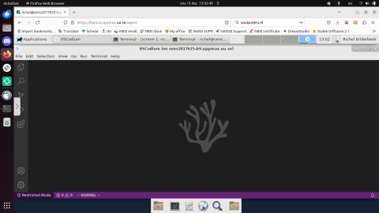

VSCodium¶

Objectives
- Start VSCodium on Bianca
Notes for teachers
Teaching goals:
- The learners demonstrate to have started VSCodium on Bianca
Schedule (45 minutes):
- 5 mins: Let the learners start an interactive node: this can take dozens of minutes!
- 5 mins: kill some time
- 5 mins: discuss this page
- 15 mins: do the exercises
- 15 mins: discuss the exercises
Exercises¶
Read the UPPMAX documentation on VSCodium on Bianca here, then do these exercises.
Exercise: Start VSCodium
The goal of this exercise is to make sure you can start VSCodium.
How to find out if you are on a login or interactive node
In the terminal, type hostname
- the login node has
[project]-bianca, where[project]is the name of the project, e.g.sens2023598 - the interactive node has
b[number]in it, where[number]is the compute node number